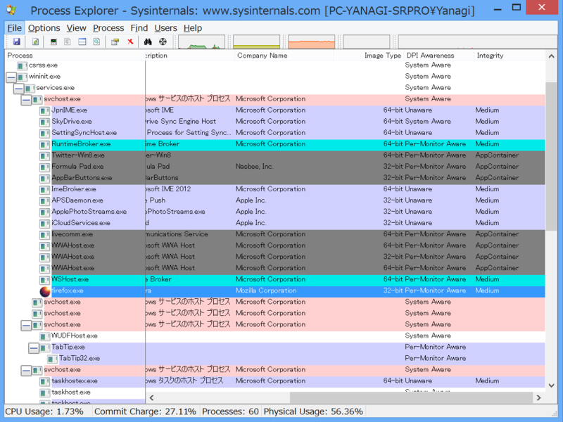
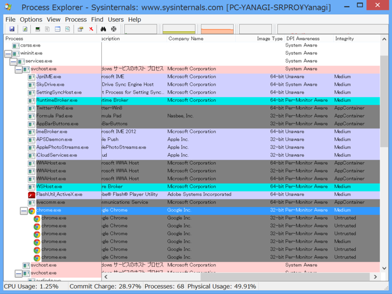

Mozilla Firefox 26 の Immersive モード
公開日：
「Firefox 26」は、「Windows 8」から導入されている“Immersive”モードをサポート。このモードはタッチ操作に適した“タイル”や、余分なユーザーインターフェイス要素を極力廃したコンテンツ重視のデザインが特長で、ストアアプリが動作するサンドボックス環境“AppContainer”によるセキュリティの恩恵も受けられる。
この後半がウソだという指摘を受けたので検証。結論的には――間違ってた／(＾o＾)＼ おそらくそのうち修正されると思う。

Mozilla Firefox の Immersive モードは AppContainer ではなく、整合性レベル Medium で動作する。
ちなみに Google Chrome も調べてみた。

整合性レベル Medium で動作する親プロセスの下に Untrusted な複数のプロセスがある。
しかし、これだったら Internet Explorer を使った方が安全なような気もする。また、仮に Microsoft のせいでサードパーティ製ブラウザーが Medium で動作することを強いられているならば、あんまりよい状況ではないと思う。
追記
URL 整合性レベルMediumで動作する親プロセスと，サンドボックス内で動く子プロセスという構成はIEもChromeも今のところ同じですかね．OS上の制約は特になくて，提供したい機能から単にそういうデザインになる，という感じかと．
2013-09-29 01:44:44 via web